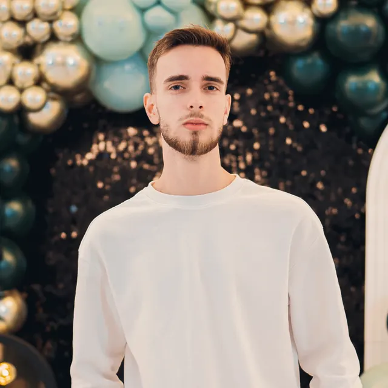
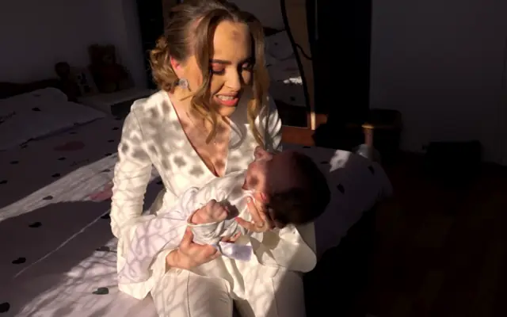
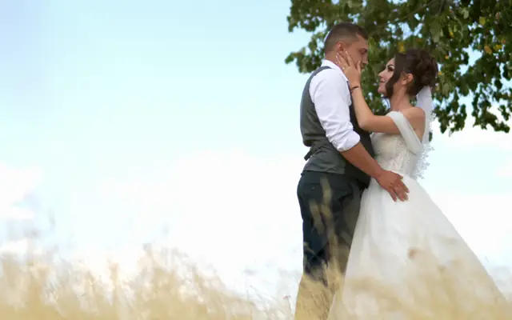
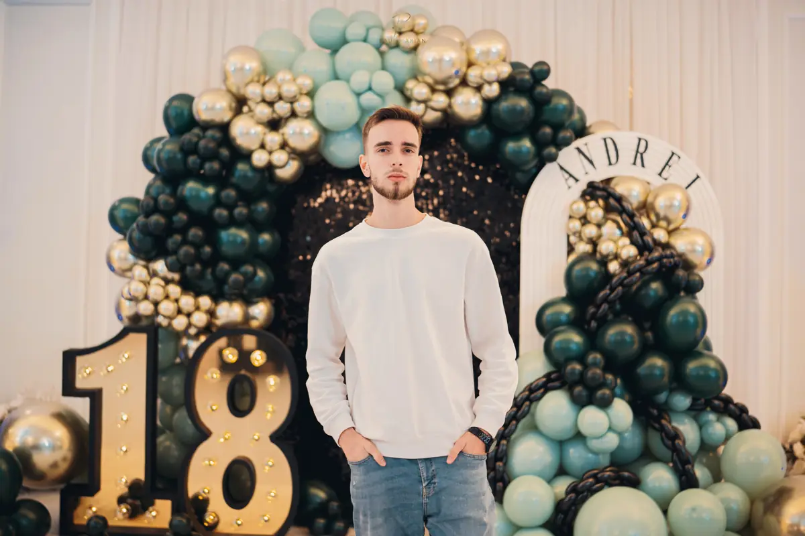

Flavia & Robert
Nuntă

Eden by Werk - HunedoaraPlay

Abordarea mea e una discretă: prefer să fiu invizibil în ziua cea mare și să prind momentele naturale, fără să întrerup cursul firesc al evenimentului. Clipul vostru e cartea mea de vizită, așa că îmi dau interesul 110%.
Povestea meaCe filmez

Filmez nunți, botezuri și majorate. Tu bucură-te de ziua ta, eu știu ce am de făcut, unde trebuie să fiu și când.





Nuntă
Cununie
Botez

Majorat
Majorat
Nuntă

Prețuri transparente, fără costuri ascunse. Toate pachetele includ consultanță înainte de eveniment.

Abordarea mea este una discretă. Prefer să fiu invizibil în ziua cea mare, capturând momentele naturale, fără să întrerup cursul firesc al evenimentului.
Sperând că nu ai ajuns aici întâmplător, vreau să te salut cu această ocazie și să mă prezint.
Mă numesc Andrei Vlădulescu am peste 3 ani de experiență în domeniul videografiei. Mă gândesc că, în ultima perioadă, v-ați confruntat cu întrebarea aceasta: pe cine să alegem ca videograf sau fotograf?
Vreau să vă ușurez această mică provocare, arătându-vă ce fac și cum lucrez. Portofoliul meu este cartea mea de vizită, așa cum va fi și viitorul vostru clip de nuntă, de aceea pot garanta că veți fi mulțumiți de alegerea făcută.
Dar, înainte de toate, vreau să fim prieteni. Poți să-mi ceri sfaturi, iar eu voi fi acolo să ajut cu tot ce pot, pentru că știu cât de important este evenimentul pentru voi.
O să-ți fiu alături în ziua evenimentului! O să ai multe pe cap, nu trebuie să ne porți și nouă de grijă. Știu ce am de făcut, știu unde trebuie să fiu și când să fiu. Tu bucură-te de ziua ta! Cu cât vei fi mai relaxat(ă), cu atât rezultatele vor fi mai bune.
Camere 4K, stabilizatoare profesionale, drone pentru cadre aeriene.
Discreție totală, emoție autentică.
Procesul meu este gândit pentru ca tu să te bucuri de ziua nunții, fără griji.
Ne întâlnim pentru a ne cunoaște și pentru a discuta viziunea voastră. Vreau să înțeleg povestea voastră de dragoste.
Stabilim împreună timeline-ul zilei și locațiile importante. Pregătesc echipamentul și planul de filmare.
Ziua cea mare! Sunt prezent discret, capturând fiecare moment important, fără să întrerup fluxul natural.
Selectez cele mai bune cadre, adaug muzică și efecte pentru a crea un film care să vă emoționeze de fiecare dată.

Filmez în LOG ca să păstrez fiecare detaliu din lumină și umbre, apoi dau fiecărui cadru culoarea lui. Trage de bara din mijloc ca să vezi diferența.
Scrie-mi data și locația, îți răspund cât pot de repede.
Solicită ofertăData e încă liberă?Hai să vorbim despre ziua voastră